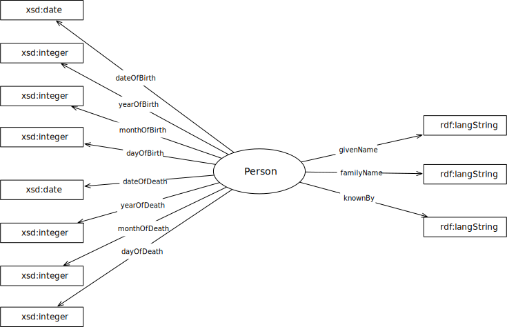

IRI: http://parliament.uk/ontologies/person/Person
IRI: http://parliament.uk/ontologies/person/dateOfBirth
IRI: http://parliament.uk/ontologies/person/dateOfDeath
IRI: http://parliament.uk/ontologies/person/dayOfBirth
IRI: http://parliament.uk/ontologies/person/dayOfDeath
IRI: http://parliament.uk/ontologies/person/familyName
IRI: http://parliament.uk/ontologies/person/givenName
IRI: http://parliament.uk/ontologies/person/knownBy
IRI: http://parliament.uk/ontologies/person/monthOfBirth
IRI: http://parliament.uk/ontologies/person/monthOfDeath
IRI: http://parliament.uk/ontologies/person/yearOfBirth
IRI: http://parliament.uk/ontologies/person/yearOfDeath
This HTML document was obtained by processing the OWL ontology source code through LODE, Live OWL Documentation Environment, developed by Silvio Peroni.